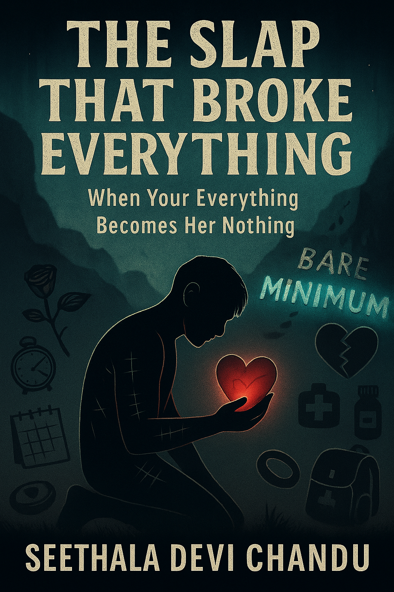
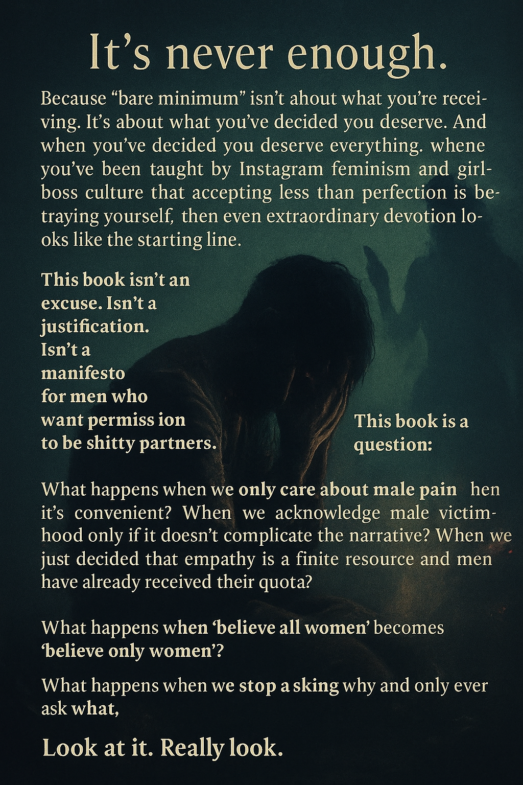
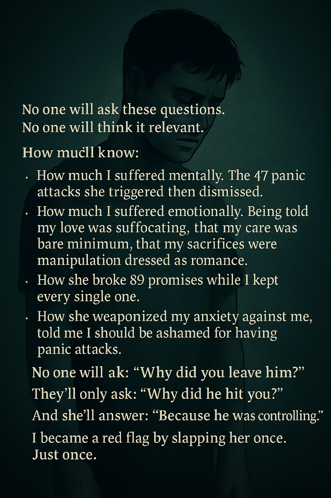
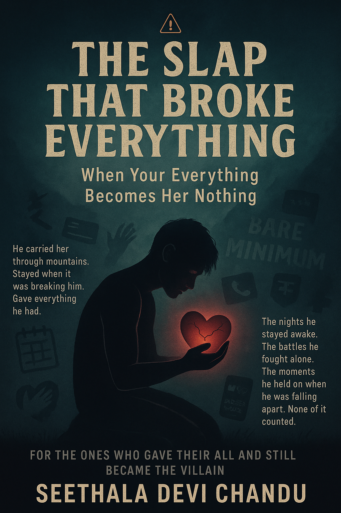
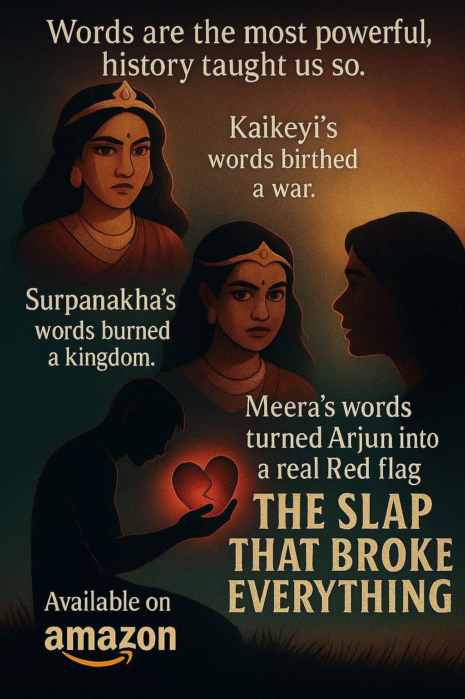
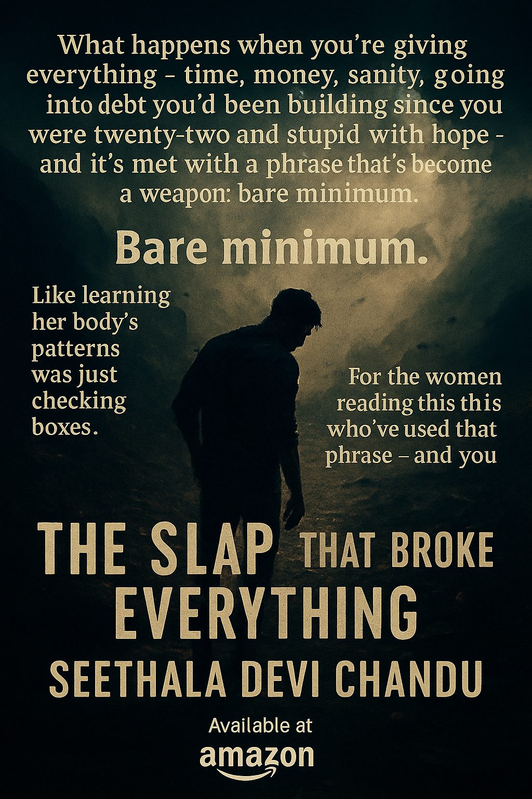
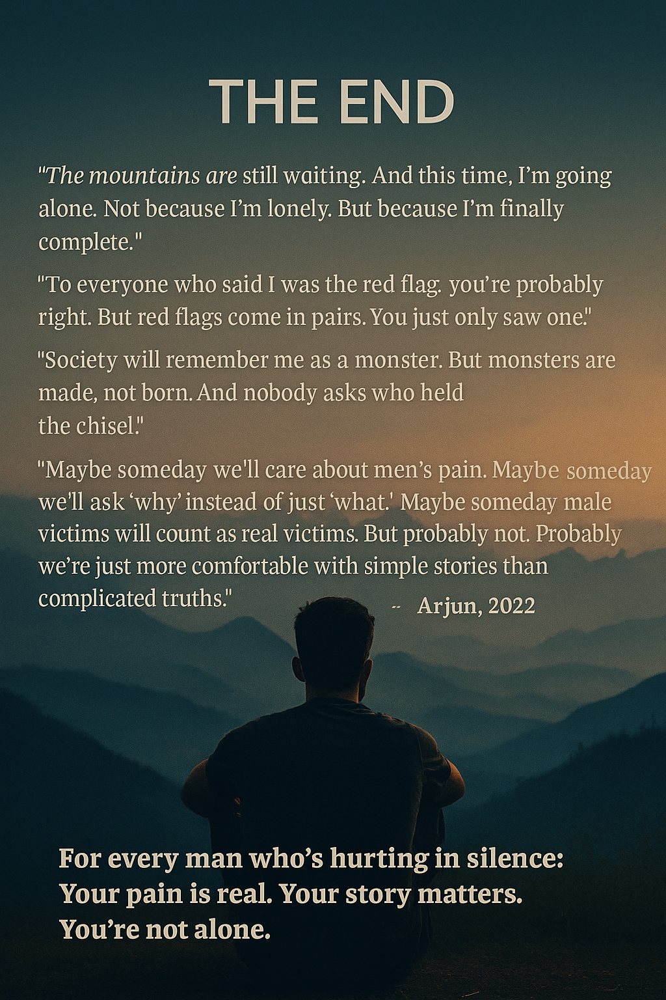

The Slap That Broke Everything
When Love Wasn't Enough

Preface

On Words That Wound and Hands That Follow The Ancient Truth We Choose to Forget Let me tell you about two women whose words burned kingdoms to ash. Not metaphorically. Actually. Kaikeyi. A queen. A woman who'd earned two boons through devotion, the kind of devotion that involves saving your husband's life in battle, the kind that comes with promises attached. She used those boons like a blade to the throat. "I want my son on the throne. I want Rama exiled. Fourteen years." Two sentences. That's all it took. King Dasharatha didn't die from illness. Didn't fall in battle. His heart simply, stopped. Shattered by grief so complete that his body gave up. The ancient texts don't sugarcoat it: he died from her words. From loving someone whose language had turned lethal. The kingdom mourned. Rama walked into exile. Sita followed. And every catastrophe that came after Sita's abduction, Lanka's destruction, generations of bloodshed, traces back to this moment. To words spoken by a woman who knew exactly what devastation they would cause. Ask yourself: What if she'd stayed silent? Dasharatha lives. Rama rules. Sita never meets Ravana. The war never happens. Entire bloodlines survive. But Kaikeyi spoke. And a king died of a broken heart. We remember her as villain. We dissect Ravana's choices. We debate Rama's dharma. We analyze every consequence of those words. But we never call the words themselves what they were: a weapon that killed. Surpanakha. A woman mutilated for the crime of wanting what she couldn't have. Lakshmana severed her nose - brutal, unforgivable, the kind of violence that makes you flinch even reading it millennia later. She went to her brother Ravana. Bleeding. Humiliated. Burning with the particular rage of someone who's been made powerless and knows exactly how to reclaim power. And she spoke. "Your sister was dishonored while you sat in luxury. Sita's beauty surpasses mine, take her. Remind them who you are." Calculated. Precise. Every word designed to wound Ravana's pride in exactly the place that would make him react. And he did. Lanka burned. Ravana died. His entire lineage erased. Thousands dead in pyres. An era ended. Because of words. We remember the war. Condemn Lakshmana's violence as we should. Debate whether Rama should have protected her differently. Analyze Sita's fire ordeal and what it means for women's agency. But Surpanakha's words? The deliberate provocation? The weaponized shame designed to manufacture exactly the catastrophe that followed? Barely mentioned. A footnote. Background noise. As if words were harmless. As if language couldn't murder. What if she'd accepted rejection with grace? Her nose remains intact. Ravana never learns of Sita. The war never ignites. Lanka survives. But she spoke. And a kingdom burned. We examine every angle of the violence that followed. But the match that struck the flame? That, we pretend, was just... complicated feelings. The Line That Cannot Be Crossed Raising a hand against a woman is a sin. Full stop. No asterisks. No footnotes about provocation or accumulated suffering or psychological warfare. A sin. The ancient texts knew this. Made it absolute. A man who strikes a woman carries that mark forever deserves to carry it regardless of what came before. Arjun raised his hand. Once. In a moment when everything inside him detonated. He deserves the red flag. Every consequence. Every whisper. Every woman who recoils when she hears his name. Every blocked number, every ruined opportunity, every label society has designed for men who cross that line. This book does not absolve him. Will not try. Cannot. Should not. The Question That Rots in Silence But here's what haunts me: Why does nobody count the words that came before? Kaikeyi's demands killed a king. His heart stopped. He died of grief of words so devastating his body couldn't survive them. Do we call that murder? Or do we call it consequence? His weakness? The inevitable price of loving unwisely? Surpanakha's provocation burned a kingdom. Thousands died. Generations ended. Do we count those deaths as hers? Or do we assign them to Ravana's pride, to fate, to the warriors who actually swung the swords? When a woman's words systematically dismantle a man call his love insufficient, his devotion "bare minimum," his sacrifices manipulative and he breaks under that weight. Do we ask what those words cost him? Or do we just catalog his breaking and call it justice? The Weapon We Pretend Is Harmless Ancient wisdom understood something we've abandoned: Words are weapons. Not poetically. Literally. You can murder someone slowly with nothing but language. Cell by cell. Conviction by conviction. Until the person they were simply... stops existing. You can cage someone with redefinition. Gaslight them until they doubt their own sanity. Destroy their self-worth by treating extraordinary devotion as baseline expectation, then calling anything less neglect. Call it "setting boundaries." Call it "finding yourself." Call it "refusing to settle." The knife is still a knife when you've labelled it something prettier. Kaikeyi's words were selfish. Dasharatha died anyway. Both true. Surpanakha's provocation was calculated. The war still burned real people. Both true. Why can we hold this complexity for ancient stories but not modern ones? Why can we acknowledge Kaikeyi's role without dismissing Dasharatha's death as weakness? Why can we recognize Surpanakha's weaponized shame without absolving Ravana? Why can our mythology contain multitudes, righteous words and violent responses, victims who become provocateurs, choices that cascade into catastrophe, but our modern discourse demands we choose? One villain. One victim. Pick a side. What This Book Offers (And What It Doesn't) This is not justification. Arjun crossed the line. That moment rewrote everything. Physical violence is the boundary we've drawn for good reason - visible, documentable, undeniable. But this is autopsy. An examination of what came before. The systematic dismantling. The weaponized language. The redefinition of devotion as control, sacrifice as manipulation, love as insufficiency. The slow murder that happens in sentences before it explodes into a single, unforgivable second. Our mythology understood: A woman's words can topple kingdoms. Kill kings. Manufacture wars. Not because women are villains. Because language is powerful. Emotional violence is real. Psychological warfare destroys as thoroughly as any blade. Modern wisdom refuses this truth: When we only count one kind of violence. When emotional devastation "doesn't count" unless it escalates to something visible. When we've decided that systematic abuse only becomes abuse when it leaves marks we can photograph We're not preventing violence. We're just choosing whose pain to ignore until it becomes impossible to deny. The Pattern Staring Us in the Face What if Kaikeyi had stayed silent? Dasharatha lives. Rama rules. Sita never meets Ravana. Lanka survives. The entire cascade of tragedy, prevented by silence. What if Surpanakha had walked away? Her nose intact. Ravana never provoked. The war never ignited. Generations survive. What if the words that slowly murdered someone's sanity had never been spoken? What if "bare minimum" had been recognized as extraordinary devotion? What if gaslighting had been called abuse before it drove someone to breaking? What if systematic emotional warfare had been intervened upon before the hand was raised? Would the line have been crossed? We'll never know. Because we've decided only the visible violence matters. Only the moment of breaking. Only the response. The year of destruction that preceded it? Just... complicated relationship dynamics. Two incompatible people. Not abuse. Never abuse. We've reserved that word for bruises. Read This With Your Eyes Open The protagonist is guilty. This isn't redemption. Not absolution. Not an attempt to justify the unjustifiable. But guilt doesn't erase what came before. The months of gaslighting. The financial exploitation. The weaponized mental health. The systematic redefinition of reality until he no longer knew what was true. He was victim before he became perpetrator. Two truths coexist: Violence is always -always the perpetrator's responsibility. And some people are destroyed long before they destroy others. This is the story of what came before the slap. Before the red flag. Before the Instagram stories about toxic men and survivors. Before the narrative calcified into comfortable simplicity. This is the story of how "bare minimum" costs everything. Your savings. Your sanity. Your self-respect. And finally, catastrophically, your humanity. The ancient texts knew: Words wound. Emotional violence destroys. The person bleeding in the street was often cut months before the visible wound appeared. Modern wisdom says it doesn't matter. Only visible violence counts. Maybe that's right. Maybe the physical line is all we can measure, document, hold up as evidence. But then stop pretending words are harmless. Stop pretending systematic emotional abuse isn't violence just because it doesn't photograph well. Stop pretending that when someone breaks under accumulated weight, their breaking exists in a vacuum. The Uncomfortable Truth He hit her. That makes him the monster he'll be remembered as. Deservedly. And she destroyed him first. Slowly. With words that redefined his reality until he no longer recognized himself. That makes her. what? Complicated? Self-actualizing? Someone setting healthy boundaries? Or the red flag nobody wanted to see because we've decided only physical violence counts? The Question That Haunts Every Page In the Mahabharata, kingdoms burned from righteous questions. In the Ramayana, kingdoms burned from selfish demands and calculated provocations. We remember the fires. Debate the warriors. Analyze the aftermath. But we barely speak of the words that struck the match. This book asks: What if we did? What if we examined emotional violence with the same rigor as physical violence? What if "bare minimum" was recognized as the weapon it is? What if gaslighting, financial exploitation, systematic psychological warfare were called abuse, even when the abuser is female and the victim is male? What if we cared about preventing violence instead of just punishing it after it becomes visible? You're about to read a story where both people are red flags. Where victim and perpetrator are roles that blur and switch until the only clear truth is: two people destroyed each other. He'll be remembered as the monster. She'll be remembered as the survivor. Maybe that's fair. Maybe one moment of physical violence outweighs a year of emotional devastation. Maybe society is right to draw the line at raised hands and ignore everything before. But maybe we're missing the point entirely. Maybe if we'd counted Kaikeyi's words as violence, Dasharatha doesn't die of grief. Maybe if we'd recognized Surpanakha's provocation as weaponized, we intervene before kingdoms burn. Maybe if we'd called Meera's systematic abuse what it was, Arjun doesn't break. Maybe prevention requires acknowledging that violence begins long before hands are raised. This book will not comfort you. Won't give you a villain to hate or a hero to root for. Won't fit into the neat categories social media has built for trauma and accountability. But it will ask you to consider: What if the ancient stories were trying to teach us something we've deliberately forgotten? That words wound. That emotional violence destroys. That some provocations are designed to manufacture exactly the catastrophe that follows. Not to excuse the response. Never. But to understand it. To prevent it. To recognize that if we only intervene after the hurt becomes visible, we've already failed. Welcome to the wreckage. To the story of a man who deserved his red flag. Earned it. Owns it. And the woman whose red flag nobody saw because we've decided words aren't weapons. Welcome to the conversation nobody wants to have. The one about Kaikeyi's deadly demands and Surpanakha's calculated provocations and why we remember the kingdoms that burned but not the matches that lit them. The one about how hurt people hurt people, and if we're only counting one kind of hurt, we're not solving anything, just choosing whose pain to ignore. Let us have it anyway. With the gravity it deserves. With the complexity our ancient texts understood. With the honesty modern discourse has abandoned for comfortable simplicity. This is the story of what came before. The words. The wounds. The slow murder that happened in sentences before it detonated in a single, unforgivable second. May it haunt you the way it haunts everyone who lived it. May it make you ask the question nobody wants asked: What if we'd counted all the violence, not just the kind that leaves visible scars? - Seethala Devi Chandu
A Conversation We're Not Supposed to Have

Here's the thing about respect: real men practice it like breathing - automatic, essential, non-negotiable. We hold doors. We listen. We learn about things we'll never experience (menstrual cramps, workplace misogyny, the particular terror of walking alone at night) because understanding someone's reality is the baseline cost of loving them. And sometimes – sometimes - we fuck up anyway. Not because we're monsters. Not because respect was performative. But because we're human, and humans break under enough pressure, and breaking doesn't always look like quiet tears and therapy appointments. Sometimes it looks like the thing you swore you'd never do. The line you promised you'd never cross. And when that happens, we own it. We don't justify. Don't deflect. Don't pull out scorecards of prior good behavior like they're Get Out of Jail Free cards. We say: "I did this. It was wrong. I will carry this. And I will make damn sure it never happens again." That's what accountability looks like when you actually mean it. But here's what nobody wants to talk about - the conversation that gets you labeled a misogynist before you finish the sentence: What happens in the year before the break? What happens when you're giving everything - time, money, sanity, the future you'd been building since you were twenty-two and stupid with hope - and it's met with a word that's become a weapon: bare minimum. Bare minimum. Like learning her body's patterns was just checking boxes. Like going into debt for her dreams was merely adequate. Like carrying her - literally, physically carrying her when altitude sickness hit - was the baseline requirement instead of the kind of devotion most people only pretend to offer. Bare minimum. For the women reading this who've used that phrase - and you know who you are, because it tastes like power when you say it - I need you to understand something: You have no idea what it cost him to do that "bare minimum" thing for you. You don't know about the overtime he worked so he could afford the dinner he pretended was casual. The dreams he postponed because yours seemed more urgent. The panic attacks he had in bathroom stalls at work because the cognitive dissonance of loving someone who kept lying to him was literally making him sick. You don't know because he didn't tell you. Because men are taught that vulnerability is weakness, that needing support is failure, that if we can't handle it silently we don't deserve to handle it at all. So we suffer quietly. Accumulate damage like interest. And hope God, we hope that if we just give more, sacrifice deeper, prove ourselves harder, it'll be enough. It's never enough. Because "bare minimum" isn't about what you're receiving. It's about what you've decided you deserve. And when you've decided you deserve everything, when you've been taught by Instagram feminism and girl-boss culture that accepting less than perfection is betraying yourself, then even extraordinary devotion looks like the starting line. This book isn't an excuse. Isn't a justification. Isn't a manifesto for men who want permission to be shitty partners. This book is a question: What happens when we only care about male pain when it's convenient? When we acknowledge male victimhood only if it doesn't complicate the narrative? When we've decided that empathy is a finite resource and men have already received their quota? What happens when "believe all women" becomes "believe only women"? What happens when we stop asking why and only ever ask what? If you're a woman who's been genuinely abused and statistically, that's 70% of you reading this.., this book is not dismissing your experience. Your pain is real. Your trauma matters. The men who hurt you deserved every consequence. But if you're the other 30% if you're the woman who lied systematically, manipulated financially, gaslit psychologically, and then clutched your pearls when he finally broke, this book is your mirror. Look at it. Really look. See the year before the slap. The months of provocation. The systematic button-pushing. The weaponization of his mental health. The casual cruelty dressed up as "setting boundaries." And ask yourself: Am I the red flag I convinced everyone he was? For the men reading this: you're not absolved. Violence is violence. One moment of harm doesn't get erased by a year of devotion. You crossed a line, and you'll carry that mark forever. But your pain before that moment? That was real too. And you're allowed to say so. Allowed to acknowledge that you were drowning before you dragged her under. Allowed to recognize that abuse isn't gendered, that manipulation doesn't check chromosomes, that financial exploitation and emotional warfare work just as well with female perpetrators. You're allowed to be both victim and perpetrator. Both destroyed and destroyer. Society doesn't want that complexity. But complexity is the truth. This book won't make you popular at dinner parties. Won't get quote-tweeted by the empowerment accounts. Won't be recommended by therapists who've built entire practices on the comfortable binary of male perpetrator, female victim. But it will tell the truth that 30% of us are living: Sometimes the woman is the abuser. Sometimes "bare minimum" is actually extraordinary sacrifice that you've decided doesn't count. Sometimes the man who broke was breaking for months before he became the monster you told everyone he was. And sometimes .., just sometimes .., we need to ask why instead of just what. Not to justify violence. Never to justify violence. But to understand it. To prevent it. To recognize that hurt people hurt people, and if we're only intervening after the hurt becomes visible, we're missing the entire fucking point. Read this book with an open heart or don't read it at all. It won't comfort you. Won't give you easy answers. Won't fit into the neat little boxes social media has built for trauma and accountability. But it will ask you to consider that pain isn't gendered. That empathy shouldn't be conditional. That the 30% of men who genuinely loved, sacrificed completely, and still became villains deserve to have their stories told too. Even if especially if those stories make us uncomfortable. Welcome to the conversation we're not supposed to have. Let's have it anyway.
Dedication
For the 30% who burned themselves to keep someone else warm, only to be remembered as the flame that got out of control. For every man who learned that "I love you" sometimes means "I love what you can give me," who discovered too late that sacrifice without reciprocity isn't devotion - it's just slow-motion self-destruction with better PR. For the ones who carried her through mountains, literal and metaphorical, who went into debt funding dreams that were never really shared, who postponed their own futures believing "our future" meant something mutual. For the men who respected deeply, loved genuinely, and still got recast as villains in someone else's redemption arc. For everyone who's been gaslit so consistently they started doubting their own sanity, who had panic attacks weaponized against them, who learned that emotional abuse only counts as "real abuse" when the victim checks the right demographic boxes. For those who broke once - just once - after months of systematic psychological warfare, and discovered that one visible moment of violence erases a year of invisible suffering. For anyone who's realized that society's empathy is gendered, conditional, and cruelly selective about whose pain deserves acknowledgment. This book won't absolve you. Won't make you the hero. Won't rewrite history or change how you're remembered. But it will say what nobody else will: You hurt too. And that counted. Even if they never counted it.
Author's Note

Let's get something straight before you turn another page: I know most men are the problem. Roughly 70% of domestic abuse, manipulation, and control comes from men. This book isn't for them. It won't comfort them, won't validate their bullshit, won't give them ammunition for their "but what about men" Reddit threads. This book is for the other 30%. For the men who genuinely loved, who sacrificed without keeping score, who respected their partners as equals and still got destroyed. The ones who gave everything time, money, sanity, dreams and were discarded like trash. The men who behaved like actual men: strong without being controlling, protective without being possessive, vulnerable without being weak. If that's you, if you poured yourself into someone who was systematically destroying you, if you broke once and became the villain while she rewrote history this is for you. This is for the men who really defines the true meaning of testosterone. Here's what I believe: When someone truly loves and sacrifices for their partner man or woman ,they've earned the right to hurt when that partner betrays them. Not the right to cause harm. Never that. But the right to feel devastation, to break down, to say "this is destroying me" without being dismissed. This applies to women too. When your man deviates, when he takes you for granted, when he blames you for his failures, you have every right to confront him, to demand he see what he's become. And if he won't listen? Leave. Don't martyr yourself. Don't stay out of obligation or sunk cost or hope he'll change. Walk away before you break. What I'm NOT saying: I'm not condoning violence. Physical abuse is never justified, not from emotional provocation, not from psychological warfare, not from anything. Arjun hit Meera. That was wrong. Period. But I am saying we need to ask why men break. Not to excuse violence, but to understand it. To recognize emotional abuse, financial exploitation, and systematic manipulation as real abuse even when the victim is male. Because if we only care about male pain when it's convenient, if we only acknowledge male victimhood when it doesn't complicate the narrative, we're not solving the problem. We're just deciding whose suffering counts. This book is for: The men drowning in relationships where their sacrifices are "bare minimum" but her lies are "complicated feelings." The women who burn themselves to light the way for their partners, who respect their man's efforts instead of exploiting them. Anyone who's learned that love without reciprocity isn't love , it's consumption. And for society: stop ignoring men when they're breaking. Real friends don't just tell you to leave or man up, they sit with you, ask what's wrong, help you see clearly. They intervene before you become the cautionary tale. Final word: Pain isn't gendered. Manipulation isn't gendered. The capacity to be destroyed by someone you love doesn't check what's between your legs. If you're one of the 70% - the controlling, abusive, entitled assholes, this book isn't your redemption arc. Do better or get lost. But if you're part of the 30% who loved genuinely and got destroyed anyway? Your pain is real. Your story matters. You're not alone. Now let's talk about what happens when good men break and why nobody asks them why. - The Author
Chapter One: The Developer Who Dreamed of Mountains

The fluorescent lights in Tech Solutions Pvt. Ltd. hummed like dying wasps trapped in glass coffins. I'd been staring at the same block of code for twenty minutes - not debugging it, not fixing it, just staring while the cursor blinked its judgment at me. Accusatory. Patient. Infinite. Like a metronome counting down to my eventual corporate death. Some men are born for cubicles. Others have cubicles thrust upon them like ill-fitting straitjackets. I was the latter. Twenty-six years old. Software developer by necessity, wanderer by nature, and a complete fucking idiot when it came to love. But I didn't know that last part yet. That particular education was still waiting for me in a café three weeks from now, wearing a yellow sundress and a smile that could gut a man before he even realized he was bleeding. My name's Arjun. Remember it. You'll need it for the eulogy. "Arjun, you absolute madman!" Vikram's voice cut through my code-induced stupor. He rolled his chair over on a collision course with my desk, grinning like he'd just discovered fire. "Did you really tell Sharma sir that his architectural design looked like it was made by a drunk chimpanzee with a vendetta against maintainable code?" I leaned back until my spine cracked - a sound like bubble wrap being systematically destroyed. Satisfying in a deeply concerning way. The kind of small violence you inflict on yourself when you can't inflict it on your surroundings. "I said it looked like a blindfolded drunk chimpanzee," I corrected. "Accuracy matters." "Jesus Christ." Priya appeared from behind her monitor like a judge emerging from chambers, her hijab slightly askew from running her hands through it - her telltale sign of stress or homicidal ideation. Hard to tell which. "One day you're going to get fired, and I'm going to have to pretend to be sad about it." "You'd miss me." "I'd miss the entertainment value. There's a difference." This was my team. My people. The ones who understood that corporate life was a slow death by PowerPoint presentation, that the only way to survive it was with sharp tongues and sharper code. We'd built a small fortress of competence in a wasteland of mediocrity, and we defended it with the ferocity of people who knew exactly how rare it was. I'd taken this job eighteen months ago with a plan so clear it hurt to look at directly: save every rupee like a miser hoarding gold, build a cushion thick enough to land on, then walk away from this fluorescent purgatory and start my real life. A travel startup. Not the sanitized Instagram kind where trust-fund kids pretend to rough it while staying in boutique hotels. Real travel. The kind where you sleep in bus stations and eat street food that might kill you and wake up in places that don't have names on Google Maps. I had a notebook. Seventy-three pages of plans - routes plotted like battle campaigns, partnerships with local guides, budget breakdowns calculated down to the last chai and samosa. The notebook lived in my desk drawer, under a stack of forgotten sprint retrospective notes that no one ever read. I touched it sometimes. Just to remember why I was here. Why I was drowning in Java and JavaScript and corporate jargon that made my teeth ache. "Lunch?" Vikram was already standing, keys jangling. "Can't. Code review with Sharma in ten." "The chimpanzee himself?" Priya smirked. "Good luck, soldier. Try not to compare any more of his work to primate disasters. HR's starting to notice." "I'll be diplomatic." "That'll be a first."

The thing about me and anger - we were old friends. Intimate friends. The kind who show up uninvited at three in the morning and overstay their welcome by decades. I knew it was a problem. Had known since college when I'd punched a wall over a failed exam and broken two knuckles. Knew it when I'd screamed at my father for suggesting I was wasting my life with "travel fantasies." Knew it every time I felt that hot copper taste in my mouth when someone pushed the wrong button. Knowing and fixing are different countries, separated by an ocean of good intentions and shipwrecked willpower. I'd been stuck at the border for years. Sharma's code review went exactly as expected. Him nitpicking variable names like he was grading a literature essay. Me explaining why his suggestions would break everything in production. Him pulling rank like a weapon. Me pulling facts like a shield. The temperature rising degree by degree until the conference room felt like a pressure cooker about to blow. The rage came up hot and quick, tasting like copper and battery acid. "Arjun, you need to learn some diplomacy," he said, in that tone managers use when they mean shut up and obey, peasant. My jaw clenched. My hands curled into fists under the table where he couldn't see them, nails digging into palms until I felt the sting. The pain was good. Grounding. Better than the alternative. But I swallowed it. Smiled. Nodded like a good little employee. "Sure, Sharma sir. I'll work on that." Professional. Diplomatic. Completely full of shit. I walked out before I said something that would require an HR intervention and a police escort. Priya caught up with me at the coffee machine - that ancient, temperamental beast that dispensed something vaguely coffee-adjacent if you sacrificed the right combination of buttons and prayers. "You okay?" "Fantastic." "That's your 'I'm about to punch a wall and regret it later' voice." "I don't have a -" "You absolutely do." She handed me a cup of the machine's latest crime against coffee. Dark. Bitter. Appropriate. "Look, I get it. He's an idiot with authority. But you're brilliant, and brilliant people don't last here if they keep telling idiots they're idiots. Even when they're right. Especially when they're right." "What's the alternative? Pretend?" "Yes, Arjun. Welcome to adulthood. It's disappointing. The food is mediocre and everyone's lying about being fine." I laughed despite myself, despite the rage still cooling in my chest like molten metal hardening into something permanent and jagged. This was why I kept this job. Not the salary - though the savings account was growing slowly, like a plant in bad soil. But the people. The ones who got it. Who understood that we were all just trying to survive with our sanity mostly intact and our dignity only partially compromised. By evening, the office had emptied. I stayed late, debugging a critical feature while the city outside turned from gold to indigo - that particular shade of sky that made you believe in things. Hope. Change. Futures that didn't involve fluorescent lights and passive-aggressive Slack messages. My phone buzzed. Vikram in the group chat: "Drinks this weekend? Or has Arjun found another reason to be antisocial?" Me: "I'm not antisocial. I'm selectively social." Priya: "That's literally what antisocial people say." Me: "I'll come if you stop psychoanalyzing me." Vikram: "Impossible. You're our pet project. We're trying to make you into a functional human being." I grinned at the screen. Saved another thousand rupees this month. The startup fund was at ₹3.2 lakhs now - a number I checked daily like a man checking his pulse. Another year, maybe eighteen months, and I'd have enough to risk it. To leave. To live. The mountains were waiting.

The cafe was called Brew & Banter. Overpriced coffee. Pretentious playlist full of indie bands no one had heard of. Exactly the kind of place I normally avoided like a communicable disease. But Vikram had insisted some new barista he wanted to impress, and he needed wingmen because apparently his charm didn't work without backup. "You're literally using me as a prop in your romantic comedy," I told him. "Yes. And?" "And I respect the honesty. At least you're upfront about your manipulation." It was a Saturday afternoon. The café was crowded with the kind of people who photograph their lattes before drinking them, as if Instagram would validate their caffeine choices. Couples leaning into each other like sunflowers tracking the sun. Freelancers with MacBooks covered in stickers proclaiming their uniqueness while they all ordered the same drink. The air smelled like cinnamon and desperation and expensive beans ground to overpriced perfection. I ordered black coffee. Sat in the corner like a noir detective waiting for trouble. Pulled out my notebook. That's when I saw her. Yellow sundress. Hair catching the afternoon light like water catching fire. She was laughing at something her friend said, and the sound cut through the café noise like a blade through silk - sharp, clean, impossible to ignore. I'm not a believer in love at first sight. I'm a software developer. I deal in logic, in loops and conditionals, in things that make sense when you read the documentation. But something in my chest lurched sideways like a car hitting ice. She had this way of moving - like she was dancing to music only she could hear, like gravity was optional and she'd decided to participate out of politeness rather than necessity. Her hands gestured when she talked, painting pictures in the air that her friend leaned in to see. And her perfume - even from across the room, I caught it. Something floral and expensive, like jasmine drowning in expensive alcohol. That scent. I'd learn to recognize it in the dark, to associate it with every beautiful mistake I was about to make. And her smile. Christ, her smile was dangerous. The kind that promised everything and warned you of nothing, like a contract written in invisible ink. "Dude." Vikram nudged me hard enough to spill coffee on my notebook. "You're staring." "I'm observing." "You're drooling." "I don't drool." "You're doing the emotional equivalent. The code in your brain just crashed. I can see the error message in your eyes." She glanced over. Our eyes met for maybe two seconds - long enough for every synapse in my brain to rewire itself, short enough that I could pretend it didn't matter. She smiled - polite, distant, already looking away. But those two seconds were enough. I'd spent twenty-six years being careful. Guarded. Building walls and checking the foundation every six months. Love was for people who could afford the risk, and I was saving every rupee for a dream that didn't include anyone else. But looking at her, I thought: What if this is the dream? Vikram was right. I was absolutely, irredeemably fucked.

I didn't talk to her that day. Didn't even learn her name. Just watched her leave, yellow dress disappearing into the Bangalore afternoon like something out of a film I couldn't afford to see. But that perfume lingered - jasmine and expensive mistakes. It clung to the air like a prophecy. "You should've said something," Vikram told me on the way back, his voice thick with secondhand disappointment. "Like what? 'Hi, I've been creepily staring at you for thirty minutes while pretending to look at my notebook, want to grab dinner and discuss my emotional unavailability?'" "I mean, honesty points." "That's not honesty. That's a restraining order with extra steps." But I couldn't stop thinking about her. That laugh. That dress. The way she tucked her hair behind her ear, revealing a small scar on her temple, proof that she'd lived, that she had stories, that she was real and not just a figment of my caffeine-addled imagination. I went back to Brew & Banter the next weekend. And the next. Like a ghost haunting the scene of its own demise. The third time, she was alone. My heart hammered against my ribs like it was trying to escape the cage of my chest and make better life choices. I walked over before my brain could veto the decision with logic and fear. "Hey," I said. Smooth. Real fucking smooth. She looked up from her book, some design theory thing with a cover that looked like a Rorschach test. Her eyes were darker up close. Brown with flecks of amber, like whiskey held up to sunlight. "Hi?" "I've seen you here before." I offered my hand like I was presenting evidence. "I'm Arjun." She took it. Her fingers were warm, her grip confident. That perfume hit me again jasmine and something darker underneath. Vetiver maybe. Or my own impending doom. "Meera." Meera. Even her name sounded like a promise. Like something you'd whisper in the dark, over and over, until it lost all meaning except the shape of her mouth saying it back. "Can I... can I join you? Or is that weird? It might be weird. I'm making it weird, aren't I?" She laughed that same laugh that had rewired my brain two weeks ago. "You can join me. But only if you stop spiraling. I can see the panic in your eyes." I sat. Ordered another coffee I didn't need, my third of the day. We talked about books, about the city, about nothing and everything. She was studying design. Had dreams of working abroad, seeing Switzerland, standing in snow for the first time like a character in a story she was still writing. Her eyes lit up when she talked about travel, about mountains and unknown horizons. Like there was a fire inside her that needed feeding, that would consume everything in its path if you got too close. I should've run then. I told her about the startup instead. About the notebook full of routes and dreams. "A traveller and a dreamer," she said, studying me like I was a design problem she was trying to solve. "Dangerous combination." "Why dangerous?" "Because dreamers get hurt." She took a sip of her coffee, something complicated with foam art. Her lipstick left a mark on the rim rust-coloured, like dried blood. "And travellers leave. They're always leaving." "What if I'm the kind who wants someone to come with?" She smiled then, really smiled, not the polite version but something real and raw and slightly cruel. "Then you're the worst kind. The kind who makes you believe." There it was. The first cut. So subtle I almost missed it. The kind who makes you believe. As if belief were the crime. As if hope were something to be mocked. But I heard what she wasn't saying: I've been hurt before. I'll hurt you first. I should've heard the warning in that. Should've recognized the poetry as prophecy. But I was already falling. Already gone. We exchanged numbers. Started texting. He was funny self-deprecating in a way that felt genuine rather than fishing for compliments. He'd send me screenshots of terrible code with commentary that made me laugh at one in the morning when I couldn't sleep. I liked him. Really liked him. But liking someone and being ready for them are different countries, separated by an ocean I had no intention of crossing.

He was staring at me. Had been for weeks. I noticed him the first time corner table, black coffee, notebook full of what looked like either brilliant plans or elaborate conspiracy theories. Most guys stare differently. Hungry. Entitled. Like women are meals and they're starving. This one stared like he was trying to memorize something before it disappeared. It was... different. Maybe even flattering, in a slightly stalker-ish way. When he finally approached, I almost laughed. He was nervous hands fidgeting, words tripping over themselves like they were racing to escape his mouth. Sweet, really. Most guys led with confidence they hadn't earned. This one led with honesty and barely concealed panic. "I'm Arjun." "Meera." We talked. He was easy to talk to not trying too hard, not performing masculinity like it was a job interview. Just... present. Listening. Actually listening, not waiting for his turn to talk about himself. He told me about his travel dreams, pulling out this worn notebook like it was a religious text. Pages and pages of plans routes, costs, partnerships. The kind of detail that spoke of obsession or passion. Maybe both. "You really want to do this," I said, tracing a route through Ladakh with my finger. "More than anything." His eyes were bright. Alive. Almost painfully earnest. "What about you? What do you want?" Switzerland. Snow. A life that wasn't here, wasn't this, wasn't the suffocating weight of expectations and unfulfilled potential. But I didn't say all that. "I want to see places that don't exist on a map yet. Places I haven't ruined with my imagination." He smiled. "That's beautifully cynical." "That's me. Beautiful cynic." I liked him. But I wasn't sure I could afford to.

Two weeks after we met, I asked her out properly. Dinner. Just the two of us. I stared at my phone for five minutes before responding. The three dots appeared and disappeared like Morse code for anxiety. Meera: "Are you asking me on a date, Arjun?" Me: "I'm asking you to let me buy you food while we sit across from each other and pretend to be normal humans who know how to socially interact." Meera: "That's the worst date pitch I've ever heard." Me: "Is that a yes?" Meera: "It's a yes." I told Vikram. He cheered like I'd won something instead of just agreeing to dinner with a near-stranger who already made my chest ache in ways I didn't fully understand. I changed my shirt three times, each one making me look progressively more like I was trying too hard or not trying at all. Vikram watched me spiral from his perch on my bed, eating my chips and offering exactly zero helpful advice. "You look like you're going to a funeral, not dinner." "What if I fuck this up?" "Then you fuck it up. Welcome to dating. Population: everyone who's ever tried." He crunched another chip. "You're overthinking this. She already said yes. That's the hard part." "What if she regrets it?" "Then she's human. Most decisions are regrettable. Doesn't mean they're not worth making." I settled on the blue shirt, the one Priya said made me look "like an actual adult instead of a confused teenager playing dress-up." High praise from her. Meera wanted to try this new place in Indiranagar - Italian, expensive, the kind of restaurant that puts three pieces of pasta on a plate and calls it artisanal. My savings account wept silently. I told it to shut up and remember what we were saving for. She arrived fifteen minutes late, which should've been the first sign. But she was wearing this black dress that made my brain short-circuit and reboot in safe mode, so I forgave her immediately and without reservation. That perfume jasmine and vetiver and expensive mistakes hit me like a physical thing. "Sorry," she said, not sounding sorry at all. "Traffic was murder. This city is trying to kill me through gridlock and exhaust fumes." "You look..." I gestured vaguely at all of her, my vocabulary temporarily offline. Smooth. Real smooth. "I look like I took two hours getting ready and will absolutely pretend it was effortless?" "I was going to say beautiful, but your version is more accurate. And funnier." She laughed. That laugh. I was learning it had variations, the polite one for strangers, the genuine one for friends, the one that meant she was laughing at you but affectionately. This was the genuine one. I was collecting them like rare coins, hoarding them in my memory like a dragon with treasure that would eventually burn him alive. Dinner was good. Overpriced, but good. She ordered wine, something French with a name I couldn't pronounce without sounding like I was choking. "You don't drink?" she asked, swirling her glass like she was performing wine sorcery. "Teetotaller. Have been since college." "Boring." She said it lightly, but something in her eyes sharpened. Like she was filing this information away under disappointments. "Responsible," I corrected. "Same thing. All responsible people are boring. It's the price of virtue." She took a long sip, watching me over the rim. "You're going to be one of those guys who's in bed by ten and considers a wild Friday staying up to watch a documentary." There it was again. Another cut. Casual. Almost playful. But it landed. Boring. The word sat in my chest like a stone. I'd heard it before from my father, from friends who stopped inviting me out because I always said no. But hearing it from her hurt differently. Like she'd already decided who I was and found me lacking. "Is that a deal breaker?" I asked, keeping my voice light. "I don't know yet." She smiled, but it didn't reach her eyes. "I'm still deciding if you're worth the effort." Worth the effort. As if I were a project. A fixer-upper. Something to be assessed and potentially discarded if the return on investment wasn't high enough. I swallowed the hurt. Smiled. Changed the subject. "So tell me about Switzerland. Why there specifically?" Her face lit up, and just like that, the warmth was back. She talked about snow, about mountains, about this fantasy she'd built in her head. And I listened, storing away every detail like I'd be quizzed on it later. This was how it would be, I was starting to realize. Hot and cold. Close and distant. She'd cut me, then kiss the wound before I could process the pain. And I'd let her. Because when she smiled - really smiled, not the performative version. it felt like sunlight after months of rain. Worth it, I told myself. She's worth it. The bill came. ₹3,200. I didn't flinch. Didn't let her see the mental calculation of how many hours of code that represented, how many days of rice and dal I'd need to balance it out. Outside, the sky was doing that pre-monsoon thing where it couldn't decide whether to break or hold. The air smelled like wet earth and promises waiting to be broken. Thunder rumbled in the distance like a warning no one would heed. "Walk with me?" she asked. We walked. No destination, just movement through streets that smelled like rain and jasmine and street food. She talked about Switzerland again, about this life she wanted that was always somewhere else, always out of reach. "You don't like it here?" I asked. "I like the idea of somewhere else more." She glanced at me, something unreadable in her expression. "Isn't that the human condition? Always wanting the elsewhere?" "Maybe. Or maybe we just haven't learned to love where we are." "God, you're earnest." She laughed, but there was an edge to it. "It's almost painful. Like watching a puppy trying to understand why its owner left." Another cut. Deeper this time. Like a puppy. Naive. Trusting. Pathetic. I felt something crack inside my chest - small, but definite. Like the first sign of structural damage you ignore because acknowledging it means admitting the whole thing might collapse. The rain started slowly fat drops that left dark circles on the pavement like Morse code. Then all at once, the way Bangalore rain does, like the sky giving up on subtlety and going straight for drowning. We ran, laughing, completely soaked within seconds. My shirt stuck to my skin. Her dress clung to her body like a second skin, and even drenched and shivering, she was the most beautiful thing I'd ever seen. We looked like drowned rats with good intentions and bad judgment. My flat was closer than hers. I said it without thinking, without calculating the implications. "We can wait it out. I have towels. Tea. No ulterior motives, I swear on my codebase." She looked at me - really looked, like she was solving an equation with too many variables and not enough time. Then nodded. "Okay."
My flat was small. One bedroom, a kitchen that was more suggestion than reality, furniture from IKEA that I'd assembled wrong and was too stubborn to fix. But it was mine. Paid for. Independent. A space I'd carved out of the world through nothing but code and stubborn determination. Meera stepped inside, dripping rainwater on my floor, and I saw my space through her eyes: the laptop on the dining table, the notebook beside it like a religious text, the walls bare except for a single poster of Ladakh mountains reaching toward a sky so blue it looked photoshopped. Minimal. Intentional. Lonely. "It's very... you," she said, wringing water from her hair. That perfume jasmine and vetiver filled my small space, marking it as hers now, whether I wanted it or not. "Is that good or bad?" "It's honest." She walked around slowly, taking it all in. "Everything else is just performance art. But this is sad, Arjun. Like looking at a monk's cell, but the monk doesn't even believe in God anymore. He's just going through the motions." Jesus Christ. Sad. The word landed like a fist to the gut. I'd been proud of this place. My independence. My discipline. The proof that I didn't need much to survive, that I was saving for something better. But she'd walked in and diagnosed it in thirty seconds. Sad. Empty. The home of a man who was too busy waiting for his real life to start to actually live one. "You should change," I said, trying not to let the hurt show, trying not to think about how easily she'd dismantled everything I'd built. "You'll get sick. Bangalore rain is basically dirty ice water." "Into what? I didn't exactly pack a backup outfit for accidental monsoon scenarios." I gave her one of my t-shirts and track pants. She disappeared into the bathroom. Came back looking impossibly smaller, swimming in my clothes, her hair wet and curling around her face like dark water. Something in my heart lurched sideways. Again. Harder this time. "Better?" I asked. "Warmer." She accepted the tea, wrapping her hands around the mug like it was precious. "You're being very gentlemanly about this. Most guys would see this as an opportunity. A wet girl in their apartment. It's like the setup to a bad porno." "I'm not most guys." "I'm starting to realize that." She looked at me over the rim of her cup, something calculating in her gaze. "You're the good guy. The one who'll do everything right and still get hurt because women like me don't know what to do with good guys. We're conditioned for chaos." There it was. The warning I should've heeded. Women like me. You'll still get hurt. She was telling me, point-blank, that this would end badly. That I would be collateral damage in whatever war she was fighting with herself. And I heard her. I did. But then she smiled soft, almost shy, so different from her usual sharp edges and all the warnings dissolved like sugar in rain. We talked until 2 AM. The rain hammered against the windows like it was trying to get in, to become part of the conversation. She told me about her family overbearing mother who measured love in criticism, absent father who measured it in silence, the pressure to be perfect in a world that kept moving the goalposts. I told her about mine, simple people with simple dreams, confused by their son who wanted to wander instead of settle, who saw stability as a cage rather than safety. For a few hours, the cuts stopped. The edges softened. She laughed at my jokes without the cruel undertone. Listened to my travel dreams without calling them naive. For a few hours, I forgot that she'd called me boring, sad, like a puppy. For a few hours, it felt like maybe this could work. "You can stay," I said eventually, when the rain showed no signs of stopping and the clock showed no mercy. "The couch is comfortable. Or you can take the bed. I'll take the couch." "Very gentlemanly." "I try. It's exhausting, but I try." She took the bed. I took the couch. Lay there staring at the ceiling, hyperaware that she was twenty feet away, breathing, existing in my space, wearing my clothes, disrupting the careful equilibrium I'd built. Her perfume had settled into the fabric of everything - my couch, my air, my lungs. This was dangerous. This feeling. This want. I'd saved ₹3.2 lakhs by being careful. By saying no. By not letting anyone get close enough to derail the plan, to make me doubt the dream. But lying there, listening to the rain and knowing she was here, I thought: Fuck the plan. Some things are worth the risk. Some people are worth bleeding for. I had no idea how wrong I was. I had no idea that in three years, I'd be sitting in this same flat, alone, staring at an empty bed and wondering when exactly I'd stopped being a person and started being her emotional punching bag. But that night, in the rain, with her perfume drowning my carefully ordered life. That night, I was just a man falling in love. The impact would come later.
Continue Reading
This is just a glimpse. Experience the full story.
← Back to All Books